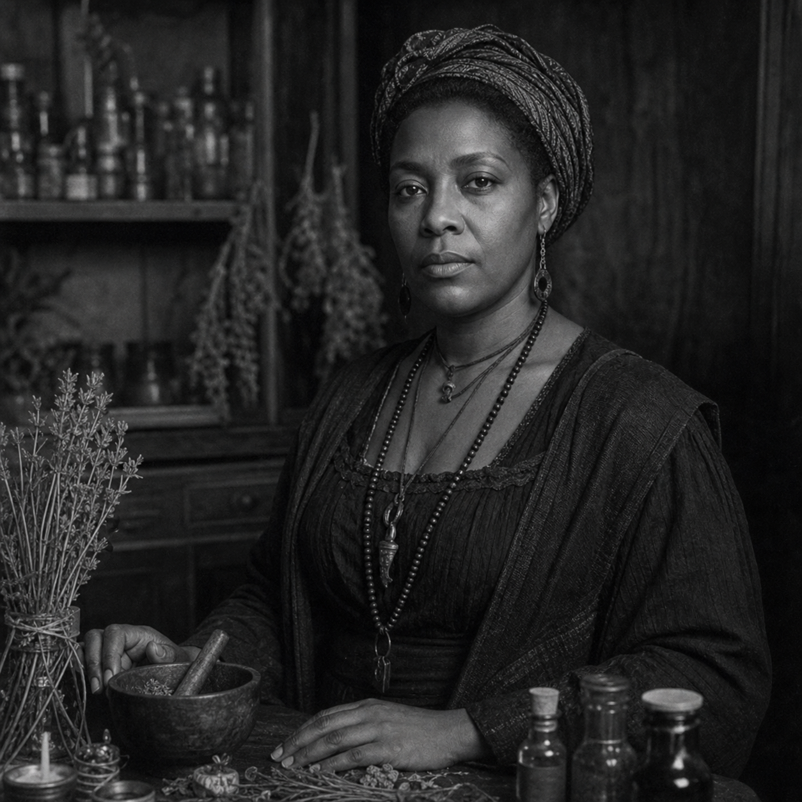

Odette Baptiste
(375 Points)
Female; Age 33; 5'3", 145 lbs; A poised Black Creole woman in her early thirties with sharp dark eyes, careful dress, fine hands, and a gaze that makes buyers feel measured before they sit down. She smells faintly of incense, orange peel, and river damp.
| ST: 10/14 [0] | IQ: 15 [60] | Speed: 6.25 |
| DX: 13 [30] | HT: 12/16 [20] | Move: 6 |
| Dodge: 6 | Parry: 5 |
Advantages
Charisma +2 [10] (Reaction: +2); Comfortable Wealth [10] (Starting Wealth: $1,500); Contacts (Back-Room Cardsharp) (Skill 12, 12 or less, Somewhat Reliable) [2]; Contacts (Canal Street Fence) (Skill 12, 9 or less, Somewhat Reliable) [1]; Contacts (Obituary Stringer) (Skill 15, 12 or less, Somewhat Reliable) [4]; Contacts (Police Matron / Widow Whisperer) (Skill 12, 9 or less, Somewhat Reliable) [1]; Contacts (Surrogate Court Clerk) (Skill 15, 9 or less, Somewhat Reliable) [2]; Lang: English (Native) [0]; Lang: French (Native Spoken/Native Written) [6]; Lang: Spanish (Accented Spoken/Accented Written) [4]; Luck [15]; Magery 3 [35]; Patron (Followers of the Right Hand) (15 or less) [60] (Equipment: Standard, +5; Special Qualities (Access to Magic in Non-magical World): Very Unusual, +10; Secret: -5; Subtraction (Minimal Intervention): -5); Patron (French Market matrons and old family clients) (9 or less) [10]; Spirit Empathy [10]; Strong Will +3 [12] (Will: 18).
Disadvantages
Duty (15 or less) [-25] (Involuntary: -5; Subtraction (Extremely Hazardous): -5); Enemy (Unknown Enemies of FRH) [-60] (Unknown: -5; Subtraction (Access to Magic in Non-magical World): -15); Pacifism (Self-Defense Only) [-15]; Secret (The dead can reach her when they should not) [-20]; Secret (Patron (French Market matrons and old family clients)) [-5]; Sense of Duty (Innocents) [-10]; Weirdness Magnet [-15].
Quirks
Calls obvious frauds sweetheart right before ruining them; Carries more saint medals than she admits; Hates wasteful floral funeral displays; Keeps hard candy for children and widows; Knows which neighborhoods smell wrong before sunset. [-5]Skills
Accounting-15 [4]; Acting-18 [8]; Administration-15 [2]; Area Knowledge (New Orleans)-15 [1]; Augury-14 [4]; Autohypnosis-13 [1]; Bard-18* [4]; Carousing-14 [8]; Detect Lies-19 [12]; Diplomacy-15 [4]; Disguise-15 [2]; Fast-Talk-18 [8]; Filch-14 [4]; First Aid/TL6-15 [1]; Forgery/TL6-16 [6]; Gambling-18 [8]; Guns/TL6 (Pistol)-15 [1]; Holdout-18 [8]; Interrogation-15 [2]; Intimidation-16 [4]; Knife-13 [1] (Parry: 5); Leadership-18* [4]; Lockpicking/TL6-15 [2]; Lucid Dreaming-15 [1]; Meditation-14 [4]; Merchant-20 [12]; Occultism-16 [4]; Performance-18 [8]; Performance/Ritual-15 [2]; Poisons-13 [1]; Psychology-16 [6]; Research-16 [4]; Rituals and Ceremonies/TL0-15 [4]; Savoir-Faire-15 [1]; Scrounging-16 [2]; Shadowing-17 [6]; Stealth-14 [4]; Strategy-13 [1]; Streetwise-18 [8]; Symbol Drawing-15 [4]; Tactics-13 [1]; Thaumatology-17* [4]; Theology-15 [4]; Wrestling-12 [1]; Writing-15 [2].
*Cost modifiers: Charisma, Magery.
Spells
Affect Spirits-16; Block-16; Blur-16; Command Spirit (Type)-16; Continual Light-16; Darkness-16; Deflect Missile-16; Detect Magic-16; Fear-16; Foolishness-16; Lend Strength-16; Light-16; Mage Light-16; Mage Sight-16; Materialize-16; Minor Healing-16; Purify Air-16; See Invisible-16; Sense Emotion-16; Sense Spirit-16; Summon Spirit-16; Truthsayer-16; Turn Spirit-16.
Description
Odette Baptiste works in a part of New Orleans where a person can still make a living if she is good enough at telling whether bad luck is ordinary, sent, inherited, or invited. She is a Black Creole working witch, which means her power is not abstract and not salon-made. It belongs to a city full of saints, spirits, Catholic residue, family memory, market competition, and people desperate enough to pay for real protections instead of pleasant lies. She sells uncrossings, warnings, selective hexes, and practical spiritual labor to the sort of clients who know better than to treat any of that as entertainment.What gives Odette dignity is that she is not a curiosity. She is prosperous enough to be credible, disciplined enough to be trusted, and historically grounded enough to understand that protective craft is not a whimsical inheritance but survival knowledge carried close to the body. Slavery is not ancient enough in her world to feel purely historical, and neither is exploitation. Family memory, city pressure, and neighborhood reputation all live very near the surface. That is why her work matters. A child who will not sleep, a room that will not settle, a husband who comes home crossed, a mourner who should not have brought that grief through the door at all: Odette belongs to the practical side of all of those problems.
The supernatural in her life does not float free from commerce. She knows buyers, rivals, clergy, hustlers, and the unofficial economy around harm and remedy. That makes her dangerous in a very FRH way. She can help, but she can also warn, refuse, or punish. She understands the line between protection and curse work too well to pretend the line is always morally simple. And she moves through a city too syncretic, too alive, and too memory-saturated for anyone honest to reduce her to a generic "voodoo woman" without embarrassing themselves.
For a new player, Odette should feel like a woman whose profession is real, whose city is spiritually crowded, and whose craft is both inherited and hard-earned. She is not there to decorate the supernatural. She is one of the people doing business with it, managing it, and at times surviving it for other people who would be far worse off without her.